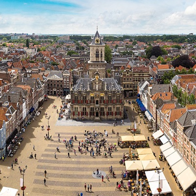

About
The Project
PAST-FORWARD aims to develop and implement innovative climate adaptation strategies and a design support system for adaptive Historic Urban Landscape (HUL) planning while integrating geospatial analysis, participatory planning, and adaptive urban landscape design.
By leveraging living labs in the historic cities of Delft and Rotterdam (NL) and Xi’an and Guangzhou (CN), the project will test innovative approaches to resilience and future-oriented urban development.
PAST-FORWARD ensures that adaptation strategies are socially inclusive, technically robust, and policy-relevant through stakeholder-driven co-design.
PAST-FORWARD integrates work in China and the Netherlands to:
Develop a portfolio of adaptive design strategies for socio-ecologically inclusive, climate-proof HULs;
Create advanced open digital tools to inform, drive, and monitor these strategies, facilitating co-creative and participatory design processes;
Validate and implement these strategies through pilot projects serving as living labs, balancing immediate actions with long-term perspectives;
Provide regulatory recommendations to promote climate adaptation within governance frameworks.
The Cities
Where we work

Netherlands
Delft
Historic canal network and aging infrastructure face increasing pluvial flood risk and the challenge of climate retrofitting without compromising architectural integrity.
Netherlands
Rotterdam
A global leader in climate adaptation, Rotterdam's historic districts test the integration of climate-proof solutions with socio-spatial equity challenges.
China
Xi'an
Home to the Terracotta Army and ancient city walls, Xi'an faces rapid urbanization pressure alongside flooding risk, requiring adaptation without cultural erosion.
China
Guangzhou
Located in the Pearl River Delta, Guangzhou's historic waterfront districts face typhoon-induced flooding and social inequalities in climate resilience access.
Work Packages
PAST-FORWARD is structured around four interconnected Work Packages (WPs), each addressing key research gaps in adapting Historic Urban Landscapes to climate change.
WP1
Framework Development & Integration
TU Delft & SCUT
A shared framework and methodology that merges climate resilience with heritage preservation across the Dutch and Chinese case studies.
WP2
Data-Driven Adaptation Planning
TU Delft & SCUT
A digital atlas, GIS-based toolkit, and web-based Decision Support System to inform and monitor adaptation planning.
WP3
Adaptive Design Principles
XAUAT & TU Delft
Context-specific, heritage-sensitive design principles and strategies, validated through pilot projects in the living labs.
WP4
Regulatory Framework & Stakeholder Engagement
Erasmus School of Law & SCUT
Regulatory analysis and participatory co-design to embed climate adaptation into governance frameworks.
The Consortium

TU Delft
Delft University of Technology
Lead applicant (NL) · WP1, WP2, WP3

SCUT
South China University of Technology
Lead applicant (CN) · WP1, WP2, WP4
XAUAT
Xi'an University of Architecture and Technology
Co-applicant (CN) · WP3

Erasmus School of Law
Erasmus University Rotterdam
Co-applicant (NL) · WP4
OKRA
OKRA Landscape Architects
Collaboration partner (NL) · WP3
GDUPI
Guangdong Urban-Rural Planning and Design Research Institute
Collaboration partner (CN) · WP2, WP3